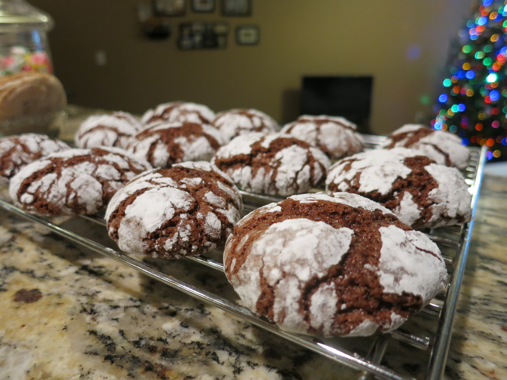

Ingredients:
- Butter (Softened) - 113g or 1 stick
- Sugar - 400g
- Eggs - 3
- Vanilla Extract - 6g
- Unsweetened Chocolate (100% cacao) - 113g or 1 4oz bar
- Flour - 275g
- Baking Powder - 8g
- Salt - 3g
- Powdered Sugar - ~60g
Instructions:
- Combine butter and sugar with a whisk.
- Add in eggs and vanilla and whisk until combined.
- Melt chocolate completely either using a double boiler or the microwave.
- Add chocolate to the batter.
- Combine the flour, baking powder, and salt and add to the bowl.
- Cover the dough and refrigerate for at least 1 hour and up to several days.
- When ready to bake, preheat the oven to 350F.
- Portion dough into 20g pieces and fully coat each ball in powdered sugar.
- Bake for around 10 minutes and check that the tops of the cookies are cracking as they flatten.
- Enjoy after they cool and harden!
Back to Homepage